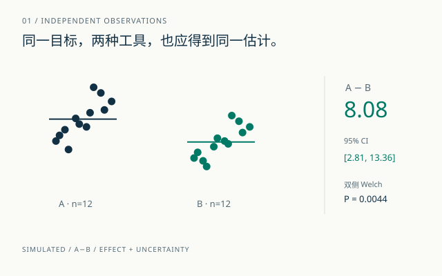
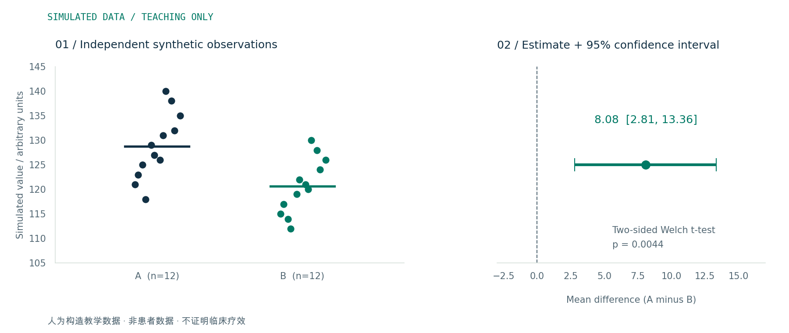
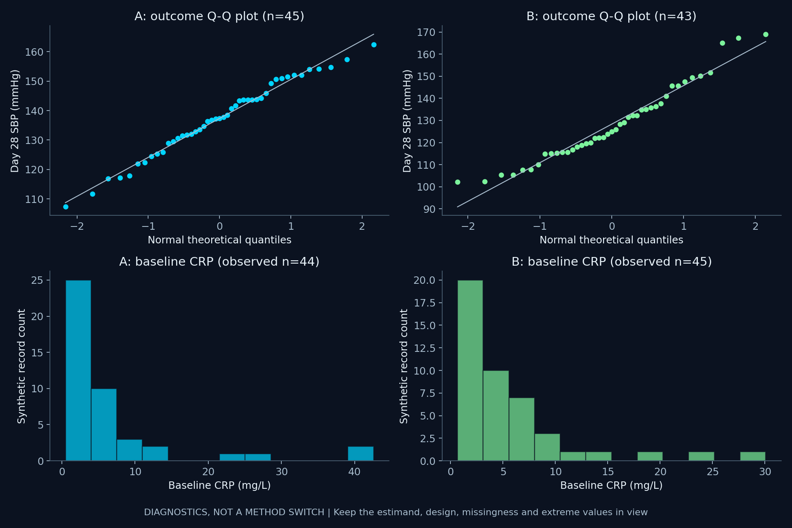
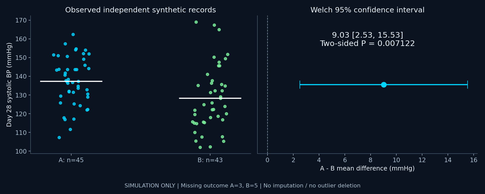

统计方法
用怎样的规则回答问题？
Welch t 检验 · Logistic 回归
生存分析 · 混合模型
生存分析 · 混合模型
CLINICAL RESEARCH / STATISTICS / AI
不必先成为程序员。先说清研究问题、数据结构和你想估计的量，再让工具与 AI 帮你把分析做得可理解、可核查。
中文图文 · 离线使用 · 无需注册

01 统计方法 ≠ 软件 ≠ 编程语言
02 P 值之外，看效应与不确定性
03 AI 给建议，证据与验证把关
THE STARTING POINT
“我用 R”说明了工具。
“估计两组均值差”才开始说明分析。
用怎样的规则回答问题？
在哪里整理、计算与保存？
如何把分析步骤写清楚？
THINK BEFORE TESTING
相同的结局类型，
不同的观测关系，需要不同方法。
| 问题与结构 | 候选方法 | 先核对 |
|---|---|---|
| 两独立组，连续结局 | Welch t 检验 / 适当的稳健或秩方案 | 目标量、独立性、分布、极端值 |
| 同一人两次连续测量 | 配对 t / 合适的配对秩方法 | 一一配对、差值分布、目标量 |
| 独立二分类 | 卡方 / Fisher；调整时讨论回归 | 分母、期望频数、抽样设计 |
| 同一人两次二分类 | McNemar / 合适的精确形式 | 不一致对、逐对记录 |
| 事件时间与删失 | KM 描述 / log-rank / Cox 等 | 随访、删失、比例风险、竞争风险 |
| 反复测量 / 多中心 | 混合模型 / GEE 等 | 相关结构、模型含义、缺失 |
先看目标量、设计、图形和异常值。秩方法也有条件，未必回答均值差的问题。
看效应估计与 CI 的精度。等效与非劣效需要预定界值和专门设计。
同一患者的多次记录有关联。先数独立研究对象，再理解重复信息。
CHOOSE YOUR WORKSPACE
本页是教学建议，未做易用性试验。
团队支持，通常比软件排名更重要。
用图形界面，先把统计概念学明白。
可以先读入教学数据、画图、做指定的分析并保存设置。jamovi 桌面版免费开源；如果所在机构已有 SPSS 许可，也可以使用。
仍需理解研究设计、变量与假设。菜单点击不能代替方法判断。
查看 jamovi 官方介绍 ↗HUMAN + AI / CHECKABLE BY DESIGN
流畅的回答不是正确性的证据。
用设计、来源与可复核代码约束它。
人群、结局、目标量、分析单位、组别、时间点与样本量。先使用去标识化的设计描述。
要求解释条件、效应量、局限和诊断，并给出可打开核查的来源。
检查参数、方向、配对和缺失；用另一实现或已知结果复核。
由研究团队确认正式方案，保存提示词、代码、版本、诊断与修改记录。
“我想估计两组的均值差。每位对象只测一次，分组设计与缺失情况如下……
请先问必须补充的信息，再比较候选方法、适用条件、效应量和诊断。引用请提供可核查链接，代码请先使用模拟数据。”
AI 风险与人工监督依据：WHO 生成式 AI 指南说明。本流程是教学设计，未做 AI 决策准确性验证。
ONE DATASET / FOUR IMPLEMENTATIONS
两组各 12 个模拟观测。
双侧 Welch t 检验，方向为 A−B。

这是一份演示性估计。解释时要同时看差异、区间宽度与设计；P 值不说明临床意义。真实研究的样本量、基线调整和缺失处理需要预先设计。
# A−B；双侧；不假设等方差
t.test(a, b,
var.equal = FALSE,
alternative = "two.sided",
conf.level = 0.95)# 明确覆盖等方差的默认参数
result = stats.ttest_ind(
a, b, equal_var=False,
alternative="two-sided",
nan_policy="raise")
result.confidence_interval(0.95)这两段是关键指令；完整数据读入、检查和输出脚本位于仓库 examples/。SAS 示例与 C++（需 Boost）也使用同一数据和方向。运行验证状态见仓库 VALIDATION.md。
CHECK YOUR UNDERSTANDING
应该保留配对信息。讨论 McNemar 等配对方案，核对逐对记录和不一致对；前后总阳性人数不够。
REPORTING LAB / V2.0
96 个独立模拟对象，A / B 各 48 个。
只做教学计算，不提供临床疗效证据。
基线表按每个变量的已知记录汇总。类别百分比排除该变量缺失；随访结局另行报告。默认不加基线 P 值，也不以基线显著性筛选协变量。
| 基线变量 / 汇总规则 | A 组（48） | B 组（48） |
|---|---|---|
| 启用 JavaScript 查看表格，或打开下方离线基线表。 | ||
SD：样本标准差；Q1 / Q3：25% / 75% 分位数，线性插值。F / M 是模拟分类标签。已知 n 与缺失 n 按变量计算。
先看独立性、目标量、原始分布与极端值。Shapiro P>0.05 不证明正态；Levene P>0.05 不证明方差相等。Welch 不要求等方差，仍有适用条件。偏态不自动等于“必须换秩检验”。

上排：随访结局 A n=45 / B n=43，每点为独立模拟对象，参考线为正态分位拟合。下排：基线 CRP A n=44 / B n=45，柱高为计数。缺失不绘制、未删除极端值。

SIMULATED REPORT / CHECK EVERY NUMBER
报告依据：SAMPL；随机试验基线报告：CONSORT 2025。可选 gtsummary / ggstatsplot 示例与运行状态见项目文档。网页无需这些包即可离线使用。
READ THE SOURCE
核查日期：2026-10-08
来源支持原理与工具角色，不构成软件排名。
方法、效应量、置信区间与复核信息。
02 / INTERPRETATIONASA 关于 P 值的声明 ↗不能只凭阈值判断意义与证据。
03 / METHODNIST 两样本 t 检验 ↗独立、配对及方差条件。
04 / IMPLEMENTATIONR t.test 官方手册 ↗配对、方差和返回的区间。
05 / REPRODUCTIONSciPy ttest_ind 官方文档 ↗显式参数与置信区间输出。
06 / AI GOVERNANCEWHO 生成式 AI 指南说明 ↗错误、不完整信息与自动化偏见。
更多模型来源、适用范围与软件入口位于仓库 docs/sources.md。引用仍需结合你的研究问题核对。